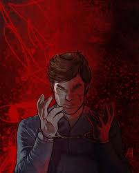

I wear a smile like a mask
but beneath it
the dark passengers whisper
He tells me where the knife should fall
He hums when the plastic wraps
He sings when blood finally leaks
But you
you only see Dexter Morgan
forensics
brother
friend
You don't see
how silence tastes like justice
how my dark passenger asks me
to answer its hunger
I am not monster
i am not a hero
i am both
The dark passenger drives
but i choose the road
Il s'agit d'un poème parlé, conçu pour illustrer le conflit intérieur de Dexter. Le poème parlé met en avant la répétition et la performance. La répétition apparaît dans les mots « médecine légale », « frère », « ami », mais aussi « je ne suis pas un monstre » et « je ne suis pas un héros ». Les images du plastique, des couteaux et du sang font référence au rituel de Dexter tout en utilisant une métaphore (le silence a le goût de la justice). Le poème parlé permet d'exprimer une intensité émotionnelle et montre qui est vraiment Dexter.